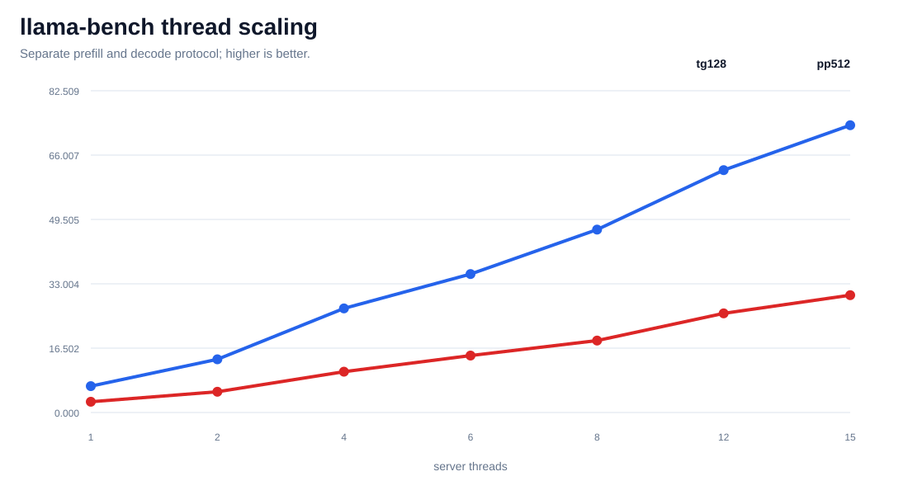
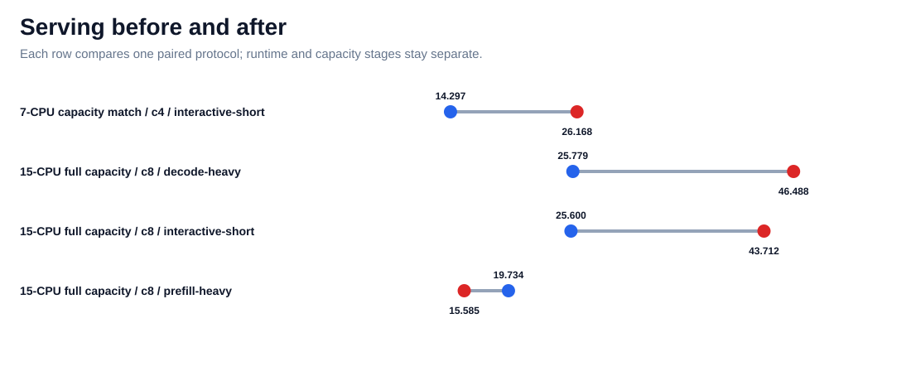
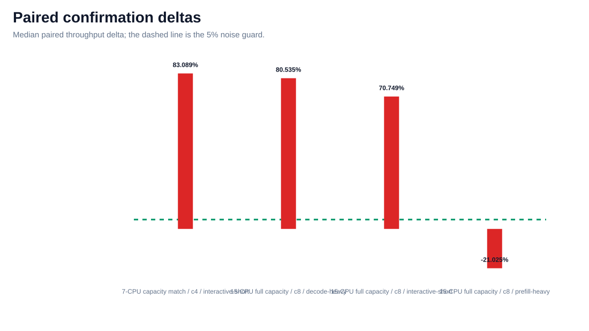
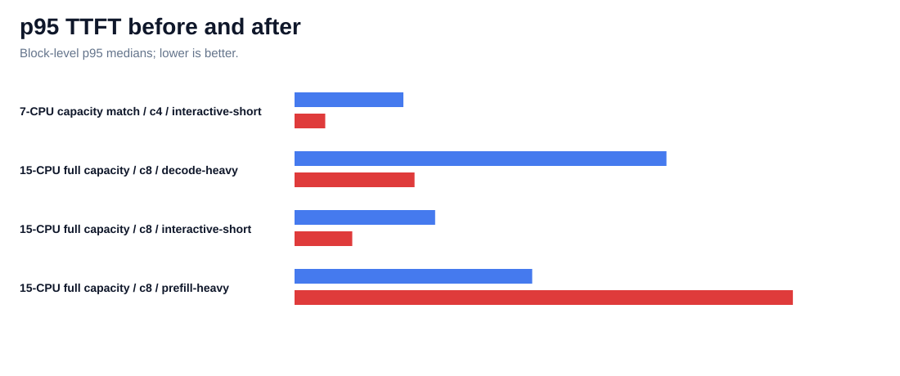
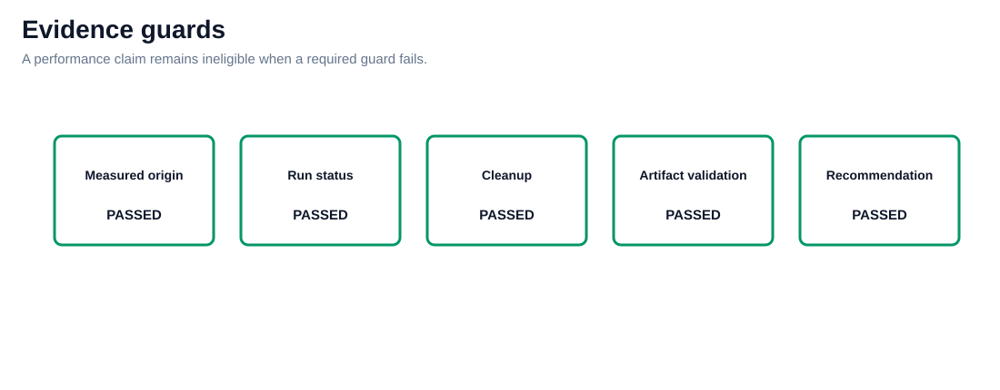

PerfRunbench measured Arm64 evidence
Realistic Arm inference tuning
Pinned Qwen2.5-7B Q4_K_M and llama.cpp evidence on one C7g.4xlarge. Thread scaling, capacity matching, and runtime tuning remain separate protocols.
Best eligible delta83.033%
Measured requests769
Candidates4
Rejected slices2
Passporteligible preliminary
Evidence boundary
| Source | summary.json |
|---|---|
| Origin | measured |
| Target | c7g.4xlarge / Neoverse-V1 |
| Topology | single_host_loopback |
| Cleanup | True |
| Claim boundary | Results are limited to one C7g.4xlarge, one Qwen2.5-7B Q4_K_M artifact, one pinned llama.cpp build, and the declared loopback and llama-bench protocols. Hardware scaling and runtime tuning percentages are not combined. |
Hardware scaling percentages and runtime-tuning percentages are never added together. Loopback evidence is not remote-network evidence.
llama-bench thread scaling

Serving throughput before and after

Paired confirmation deltas

p95 TTFT before and after

Evidence guards

Measured serving comparisons
| Protocol | Workload | Baseline tok/s | Selected tok/s | Delta | Guard |
|---|---|---|---|---|---|
| 7-CPU capacity match / c4 | interactive-short | 14.297 | 26.168 | 83.033% | eligible |
| 15-CPU full capacity / c8 | decode-heavy | 25.779 | 46.488 | 80.331% | eligible |
| 15-CPU full capacity / c8 | interactive-short | 25.600 | 43.712 | 70.749% | eligible |
| 15-CPU full capacity / c8 | prefill-heavy | 19.734 | 15.585 | -21.025% | not eligible |
Screening guards
Failed and client-limited measurements remain visible and are excluded from recommendation selection.
| Profile | Workload | Concurrency | Failures | Quality failures | Client limited |
|---|---|---|---|---|---|
| slots8-cont-on | prefill-heavy | 4 | 12 | 12 | yes |
| slots8-cont-on | prefill-heavy | 8 | 12 | 12 | no |